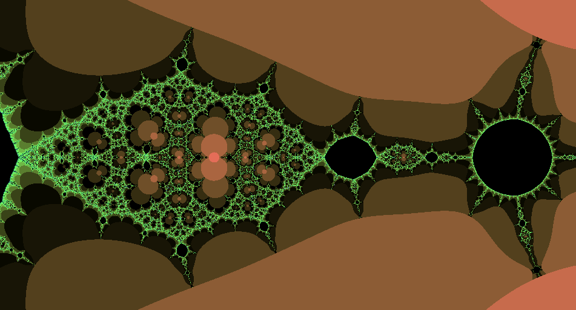

Descripción
Devuelve el nº de iteraciones, órbita y último valor de un algoritmo de escape para un radio de convergencia dado. Si no escapa, el nº de iteraciones es Infinity.
Esta función define fácilmente expresiones generales para fractales de algoritmo de escape
Cadena de entrada
escape
Cadena de salida
escape
Uso
escape(<recurrencia{varname}>,<varname>,<valor_inicial>,<radio>,<maxiter>[,<órbita>[,<valor_interior>]])
| Parámetros | |||
|---|---|---|---|
| # | Parámetro | Descripción | Valor por defecto |
| 1 | recurrencia{varname} | Expresión de recurrencia | |
| 2 | varname | Variable de la que depende la expresión de recurrencia | |
| 3 | valor_inicial | Valor de la iteración 0 | |
| 4 | radio | Radio de convergencia, valor que debe exceder una órbita para considerar que ha escapado | |
| 5 | maxiter | Máximo de iteraciones si el punto no escapa del umbral | |
| 6 | órbita | true para devolver órbita completa, false devuelve vector vacío | false |
| 7 | valor_interior | Valor devuelto para los puntos interiores del conjunto | inf |
Valor devuelto
Diccionario con las entradas
<órbita> es false)Ejemplos
escape(sec(z)/z,z,cmplj(-1,0),10,100)
Diccionario: { 'zn': -3.4457670612677704 'z0': -1 'orbita': [] 'iter': Infinity }
escape(sec(z)/z,z,cmplj(x,y),10,100);#;'iter'
Salida JGE v0.1: 
Desde / Última modificación
v0.1
v0.6.2.0
Véase también…